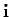
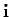
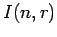
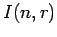

Next: Results
Up: symp
Previous: The Symplectic -Schur algebra
Index
Tableaux
We will define a basis for
 consisting of quantum symplectic
bideterminants and powers of the quantum symplectic coefficient of dilation.
Since they are too large in number we have to single out an appropriate subset.
This can be done using so called
consisting of quantum symplectic
bideterminants and powers of the quantum symplectic coefficient of dilation.
Since they are too large in number we have to single out an appropriate subset.
This can be done using so called
 -tableaux which will be defined now: To each partition one
associates a Young-diagram reading row lengths out of the
components
-tableaux which will be defined now: To each partition one
associates a Young-diagram reading row lengths out of the
components  . For example
. For example
is associated to
.
An -tableau
is constructed from the diagram of
by inserting the components of a multi-index
 column by column into the
boxes. In the above example:
column by column into the
boxes. In the above example:
If is fixed we will sometimes identify multi-indices with
their tableaux.
We put a new order
 on the set
on the set
 , namely
, namely
The reason, why we prefer  instead of the order
instead of the order  considered
in [O2] will become clear later on. Now,
a multi-index  is called -column standard if the
entries in
are strictly increasing down columns according
to this order. It is
called -row standard if the
entries are weakly increasing along rows and
-standard if it is both at the same time. We write
considered
in [O2] will become clear later on. Now,
a multi-index  is called -column standard if the
entries in
are strictly increasing down columns according
to this order. It is
called -row standard if the
entries are weakly increasing along rows and
-standard if it is both at the same time. We write
 to denote the subset of  consisting
of all -standard multi-indices. Such a multi-index
is called -reverse symplectic standard if for each
index
the occurrences of as well as
to denote the subset of  consisting
of all -standard multi-indices. Such a multi-index
is called -reverse symplectic standard if for each
index
the occurrences of as well as  in
are limited to the first rows. The corresponding subset of
in
are limited to the first rows. The corresponding subset of
 will be denoted by
.
It can be shown that even though this set is different from the one
of -symplectic standard tableaux (as defined in [Ki]
and denoted
in [O2]),
it has the same number of elements. For, let
be
the permutation transforming the order into , that is
for
will be denoted by
.
It can be shown that even though this set is different from the one
of -symplectic standard tableaux (as defined in [Ki]
and denoted
in [O2]),
it has the same number of elements. For, let
be
the permutation transforming the order into , that is
for  and
for . Then
there is an induced bijection on sending
to
and which
carries the set of -symplectic standard tableaux precisely
to the set of -reverse symplectic standard tableaux.
and
for . Then
there is an induced bijection on sending
to
and which
carries the set of -symplectic standard tableaux precisely
to the set of -reverse symplectic standard tableaux.
Here are some examples in the case (
):
The first tableau is an element of
 whereas the third
is not. The second tableau is an element of
. It is obtained
from the first one via the bijection induced from the permutation
whereas the third
is not. The second tableau is an element of
. It is obtained
from the first one via the bijection induced from the permutation  described above.
described above.
Next: Results
Up: symp
Previous: The Symplectic -Schur algebra
Index
Sebastian Oehms
2004-08-13